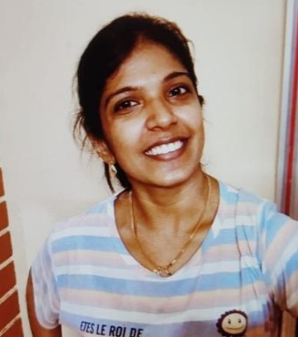

Shilpa S

As a Structural Engineer/Designer with 7 years of experience in India and
Singapore and a post-graduate degree in Structural Engineering, I am
seeking more challenging opportunities in the Engineering field. I am
highly skilled in designing and analysing structures, as well as managing
projects and collaborating with teams. My passion for innovation and
problemsolving drives me to excel in this field and I am eager to take on
new challenges and contribute to the success of your organization.
EDUCATION
Master Of Technology (MTech) In Structural Engineering
National Institute of Technology, Calicut (India)
Core Subjects
Finite Element Method, Structural Dynamics, Stability of Structures,
Earthquake Analysis and design of structures, Theory of Elasticity, and
plasticity of structures etc. The course was completed with CGPA of 7.17
Project work
Performance Evaluation of Outrigger Structural System for tall Buildings
The work was carried out using ETABS. Performed analytical studies in
Outrigger structural system using nonlinear Pushover analysis and Time
history analysis for high rise structures.
EXPERIENCE
-
Designed underground metro stations in compliance with Indian codes and
regulations, ensuring the safety and efficiency of the structures.
-
Served as the General Consultant for Chennai Metro Rail Limited,
overseeing the technical aspects of the project and ensuring compliance
with industry standards.
-
Collaborated with contractors on underground station work, resolving
technical queries and checking designs for temporary works.
-
Maintained effective communication and coordination with all
stakeholders, including project teams, contractors, and government
officials.
Structural Engineer (Infrastructure)
AURECON Singapore
-
Successfully designed MRT stations and entrances, as well as under
ground MRT structures, utilizing Euro codes to ensure compliance with
industry standards.
-
Led the tender design process for multiple underground MRT stations,
working closely with project t eams and stakeholders to deliver high
quality designs on time and within budget.
-
Completed several projects for Land Transport Authority Singapore,
contributing to the expansion and improvement of the city's
transportation infrastructure.
-
Designed POB (Ped estrian Overhead Bridge) connecting entrance and main
station, ensuring safe and efficient movement of pedestrians.
-
Conducted addition and alteration work on existing MRT stations,
collaborating with teams to ensure minimal disruption to daily
operations.
-
Prepared and submitted tender and design documents, including
calculation reports, to various stakeholders.
-
Conducted thorough error checking and correction of final draft drawings
to ensure accurate and precise designs.
-
Key role in developing "Health Infrastructure Design Reference Facility
Guidelines"
-
Utilized Revit software to create 3D models of infrastructure and
equipment
- Raised RFIs and created necessary documentation
- Ensured accuracy and consistency of models and documentation
-
Contributed to development of comprehensive set of guidelines for
healthcare facilities
- Skilled in modelling 3D designs from AutoCAD drawings
-
Expertise in developing families in Rev it for consistent and high
quality models
-
Experienced in resolving clashes using Navisworks and related software
- Capable of creating high quality drawings, sheets, and schedules
- Knowledgeable in Revit architecture, structure, and MEP
- Able to work collabora tively with cross functional teams
-
Proficient in delivering work that meets project requirements and
industry standards.
-
Involved in Engineering, Procurement, Construction, and Commissioning of
KOCHI REGAS Facilities at Petronet LNG terminal in Puthuvypin, Kochi,
Kerala for Petronet LNG Limited project.
-
Responsible for piling, foundation, and infrastructure of all industrial
buildings.
-
Utilized Primavera P6 and MS Office for planning and documentation
purposes.
-
Played a key role in scheduling, costing, arranging resources, and
monitoring project progress in the planning cell through effective
planning and coordination.
-
Analysed drawings and quantity calculations to create detailed schedules
for the project team.
-
Collected various inputs for estimation, rate analysis in tendering and
submission activities, and contracts management.
-
Managed extra and variable items claim monthly reconciliation and
monitored all requirements to ensure a seamless project flow.
-
Assisted the site planning team with contracts management activities and
cost controlling.
-
Prepared presentations for the management information system and
collected and preserved data for future references.
-
Communicated regularly with clients regarding inspections and
clarifications of any discrepancies in the drawings provided by them,
ensuring a smooth project flow and successful project completion.
-
Worked on a NHAI project of 17.2 km four-lane National Highway
connectivity to the International Container Trans-Shipment Terminal on
NH 544 in Ernakulam, Kerala.
-
Conducted SPT and supervised the construction of pre-stressed
I-girders and box girders.
-
Conducted piling work for bridges and culverts and created BBS using
MS Office for bridge substructure and super-structure.
-
Supervised ground improvement work using Band-Drain, conducted load
tests on test piles, and ensured correct placement of sheathing ducts
for correct prestressing.
-
Calculated quantity and estimated BOQ item for work completion and
procured materials on time to avoid work delays.
-
Prepared daily, weekly, and monthly progress reports,
monitored/discussed project status, and reviewed project review
meetings.
-
Took corrective measures to expedite progress and ensured timely
inspection of ground levels for recommended consolidation after
installation of PVD in the band drain technique.